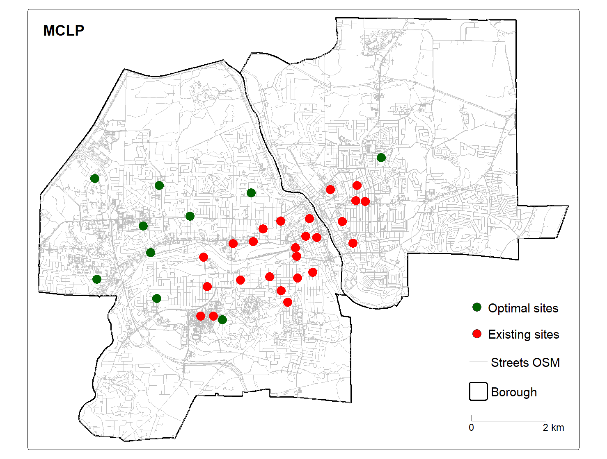

Application of the Maximal Covering Location Problem
mclp.RmdThis vignette describes how to use the MCLP function in
localalloc that can help to maximize the covered demand
given a fixed number of facilities and a distance/time threshold.
Application of the MCLP model with the addition of Bixi stations
Installation
Make sure first you have install the localalloc
package.
pak::pkg_install("sfoucher/localalloc")## ℹ Loading metadata database## ✔ Loading metadata database ... done## ## ## → Package library at /home/runner/work/_temp/Library.## → Will update 1 package.## → The package (0 B) is cached.## + localalloc 0.2.0 → 0.2.0 [bld][cmp] (GitHub: e15a889)## ✔ All system requirements are already installed.## ## ℹ No downloads are needed, 1 pkg is cached## ✔ Got localalloc 0.2.0 (source) (4.07 MB)## ℹ Installing system requirements## ℹ Executing `sudo sh -c apt-get -y update`## Get:1 file:/etc/apt/apt-mirrors.txt Mirrorlist [144 B]## Hit:6 https://packages.microsoft.com/ubuntu/26.04/prod resolute InRelease## Hit:2 http://azure.archive.ubuntu.com/ubuntu resolute InRelease## Hit:3 http://azure.archive.ubuntu.com/ubuntu resolute-updates InRelease## Hit:4 http://azure.archive.ubuntu.com/ubuntu resolute-backports InRelease## Hit:5 http://azure.archive.ubuntu.com/ubuntu resolute-security InRelease## Reading package lists...## ℹ Executing `sudo sh -c apt-get -y install cmake pkg-config libglpk-dev libabsl-dev libssl-dev libgdal-dev gdal-bin libgeos-dev libproj-dev libsqlite3-dev libudunits2-dev`## Reading package lists...## Building dependency tree...## Reading state information...## cmake is already the newest version (4.2.3-2ubuntu2).
## pkg-config is already the newest version (2.5.1-4).
## libglpk-dev is already the newest version (5.0-2build1).
## libabsl-dev is already the newest version (20260107.0-4).
## libssl-dev is already the newest version (3.5.5-1ubuntu3.7).
## libgdal-dev is already the newest version (3.12.2+dfsg-1build2).
## gdal-bin is already the newest version (3.12.2+dfsg-1build2).
## libgeos-dev is already the newest version (3.14.1-2).
## libproj-dev is already the newest version (9.7.1-1).
## libsqlite3-dev is already the newest version (3.46.1-9ubuntu0.3).
## libudunits2-dev is already the newest version (2.2.28-8).
## Solving dependencies...## 0 upgraded, 0 newly installed, 0 to remove and 25 not upgraded.## ℹ Packaging localalloc 0.2.0## ✔ Packaged localalloc 0.2.0 (606ms)## ℹ Building localalloc 0.2.0## ✔ Built localalloc 0.2.0 (1.9s)## ✔ Installed localalloc 0.2.0 (github::sfoucher/localalloc@e15a889) (1s)## ✔ 1 pkg + 18 deps: kept 18, upd 1, dld 1 (NA B) [9.4s]Bixi dataset
As an example, we read the Bixi dataset available in the
localalloc package:
- bixi_candidates : Indicate possible locations for Bixi stations (sf POINT)
## Linking to GEOS 3.14.1, GDAL 3.12.2, PROJ 9.7.1; sf_use_s2() is TRUE## Simple feature collection with 6 features and 3 fields
## Geometry type: POINT
## Dimension: XY
## Bounding box: xmin: -71.943 ymin: 45.41172 xmax: -71.93528 ymax: 45.41912
## Geodetic CRS: WGS 84
## id lat lon geometry
## 1 C1 45.41912 -71.94300 POINT (-71.943 45.41912)
## 2 C2 45.41692 -71.93528 POINT (-71.93528 45.41692)
## 3 C3 45.41172 -71.93754 POINT (-71.93754 45.41172)
## 4 C4 45.41795 -71.94000 POINT (-71.94 45.41795)
## 5 C5 45.41693 -71.94097 POINT (-71.94097 45.41693)
## 6 C6 45.41703 -71.93765 POINT (-71.93765 45.41703)- bixi_demand : Indicate the locations of people likely to use Bixi bikes. (sf POINT)
## Simple feature collection with 6 features and 2 fields
## Geometry type: POINT
## Dimension: XY
## Bounding box: xmin: -71.88045 ymin: 45.40954 xmax: -71.87312 ymax: 45.41987
## Geodetic CRS: WGS 84
## id weight geometry
## 1 24430011 225 POINT (-71.87656 45.41987)
## 2 24430012 150 POINT (-71.88045 45.41814)
## 3 24430013 190 POINT (-71.87446 45.41646)
## 4 24430014 135 POINT (-71.87825 45.41364)
## 5 24430015 115 POINT (-71.87312 45.41374)
## 6 24430017 295 POINT (-71.87584 45.40954)- bixi_existing : Indicate the existing Bixi stations (sf POINT)
## Simple feature collection with 6 features and 4 fields
## Geometry type: POINT
## Dimension: XY
## Bounding box: xmin: -71.918 ymin: 45.38878 xmax: -71.88475 ymax: 45.41125
## Geodetic CRS: WGS 84
## id type lat lon geometry
## 968 R1075 R 45.38878 -71.91535 POINT (-71.91535 45.38878)
## 969 R1076 R 45.39764 -71.91800 POINT (-71.918 45.39764)
## 970 R1077 R 45.39475 -71.89597 POINT (-71.89597 45.39475)
## 971 R1078 R 45.39948 -71.88917 POINT (-71.88917 45.39948)
## 972 R1079 R 45.41125 -71.88475 POINT (-71.88475 45.41125)
## 973 R1080 R 45.38971 -71.90527 POINT (-71.90527 45.38971)- bixi_od_candidates : Indicate candidates’ origin-destination matrix. It is a long OD table demand-to-candidate (data.frame)
## from_id to_id travel_time_p50
## 1 24430011 C1 89
## 2 24430011 C2 79
## 3 24430011 C3 78
## 4 24430011 C4 85
## 5 24430011 C5 85
## 6 24430011 C6 81- bixi_od_existing : Indicate existing Bixi stations’ origin-destination matrix. It is a long OD table demand-to-existing-stations (data.frame)
## from_id to_id travel_time_p50
## 1 24430011 R1075 74
## 2 24430011 R1076 64
## 3 24430011 R1077 51
## 4 24430011 R1078 40
## 5 24430011 R1079 21
## 6 24430011 R1080 63Using mclp
The function has 18 arguments in total, but 11 are optional. Some of them have a argument by default (so it is important to check if they make sense with your dataset) and the rest is due to the existing sites who are not mandatory. The exemple below takes into account existing Bixi stations:
mclp_highs <- mclp(
demand = bixi_demand,
demand_id = "id",
demand_weight = "weight", # (optional)
candidate = bixi_candidates,
candidate_id = "id",
existing_sites = bixi_existing,# (optional)
existing_sites_id = "id", # (optional)
matrix_OD_candidates = bixi_od_candidates,
matrix_OD_candidates_from_id = "from_id", # (optional)
matrix_OD_candidates_to_id = "to_id", # (optional)
matrix_OD_candidates_dist = "travel_time_p50", # (optional)
matrix_OD_existing_site = bixi_od_existing, # (optional)
matrix_OD_existing_site_from_id = "from_id", # (optional)
matrix_OD_existing_site_to_id = "to_id", # (optional)
matrix_OD_existing_site_dist = "travel_time_p50", # (optional)
service_radius = 10,
p_facilities = 35,
solver = "highs" # (optional)
)## MCLP | building sparse MIP...## MCLP | solving | 176 demand points | 2743 candidates | radius = 10 | p = 35 total open | 25 existing (forced) -> 10 candidate(s) to select | solver: highsThe result is an object of class localalloc_result. Its
sf_selected layer lists every open facility – the selected
candidates and the forced-open existing_sites – with a
source column ("candidate" /
"existing") telling them apart:
head(mclp_highs$sf_selected)## Simple feature collection with 6 features and 5 fields
## Geometry type: POINT
## Dimension: XY
## Bounding box: xmin: -71.96488 ymin: 45.38394 xmax: -71.91219 ymax: 45.41003
## Geodetic CRS: WGS 84
## id lat lon source type geometry
## 121 C121 45.41003 -71.91219 candidate <NA> POINT (-71.91219 45.41003)
## 181 C181 45.40408 -71.93305 candidate <NA> POINT (-71.93305 45.40408)
## 399 C399 45.38836 -71.96488 candidate <NA> POINT (-71.96488 45.38836)
## 1643 C1643 45.38394 -71.94413 candidate <NA> POINT (-71.94413 45.38394)
## 1654 C1654 45.40150 -71.94915 candidate <NA> POINT (-71.94915 45.4015)
## 2182 C2182 45.39502 -71.94655 candidate <NA> POINT (-71.94655 45.39502)The covered demand is the sum of the weights of the covered demand points:
print(mclp_highs$covered_demand)## [1] 55260You can also create a map for better visualization with
tmap:
library(tmap)
library(dplyr)
# Filter selected
sf_selected_candidates <- filter(mclp_highs$sf_selected, source == "candidate")
sf_selected_existing_sites <- filter(mclp_highs$sf_selected, source == "existing")
# Map
tm_shape(FleurNationsArr) +
tm_borders(col = "black", lwd = 2) +
tm_shape(Rues_zone) +
tm_lines(col = "gray", lwd = .01) +
tm_shape(sf_selected_candidates) +
tm_dots(fill = "darkgreen", size = .8) +
tm_shape(sf_selected_existing_sites) +
tm_dots(fill = "red", size = .8) +
tm_add_legend(
type = "symbols",
labels = "Optimal sites",
fill = "darkgreen",
size = .8,
text.size = 1,
position = tm_pos_in("right", "bottom"),
frame = FALSE) +
tm_add_legend(
type = "symbols",
labels = "Existing sites",
fill = "red",
size = .8,
text.size = 1,
position = tm_pos_in("right", "bottom"),
frame = FALSE) +
tm_add_legend(
type = "lines",
labels = "Streets OSM",
col = "gray",
lwd = 1,
position = tm_pos_in("right", "bottom"),
text.size = 1,
frame = FALSE) +
tm_add_legend(
type = "polygons",
labels = "Borough",
col = "black",
fill = "white",
lwd = 2,
position = tm_pos_in("right", "bottom"),
text.size = 1,
frame = FALSE) +
tm_scalebar(breaks = c(0, 2),
position = tm_pos_in("right", "bottom"),
text.size = .8) +
tm_title_in("MCLP",
size = 1.2,
position = tm_pos_in("left", "top"),
fontface = "bold")